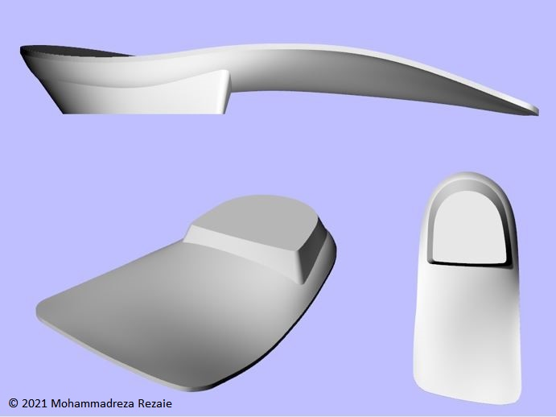

Curriculum Vitae
Mohammadreza Rezaie
➤ PERSONAL DETAILS
 Nationality: Iranian
Nationality: Iranian
Born in January 1994
Location: Shiraz, Fars, Iran
Email: mrrezaie@outlook.com
Phone (Mobile): +98 917 264 8439
Language: Persian (Native), English (Competitive)
Professional Title: Movement Science Researcher and Data Analyst
Current Affiliation: Independent Researcher
Profiles:
ORCID;
SimTK;
Youtube;
GitHub;
LinkedIn;
ResearchGate;
SoundCloud
Hobbies: Violin, Python Scripting, Music, Movie
➤ EDUCATION
M.Sc. in Rehabilitation Sciences [Prosthetics & Orthotics] (2016-2019)
School of Rehabilitation Sciences, Isfahan University of Medical Sciences, Iran
Thesis: Smartphone accelerometry for evaluating gait stability in transtibial amputees.
Official Transcript (Grade: 17.98/20; 3.871/4.0*) [PDF]
B.Sc. in Rehabilitation Sciences [Prosthetics & Orthotics] (2012-2016)
University of Social Welfare and Rehabilitation Sciences, Tehran, Iran
Official Transcript (Grade: 17.5/20; 3.597/4.0*) [PDF]
* Converted to US GPA using Scholaro
➤ RESEARCH INTERESTS
• Biomechanics of Human Movement
• Clinical Movement Analysis
• Musculoskeletal Modeling
• Joint Contact Force
• Static and Dynamic Optimization
• Muscle Redundancy, Recruitment, Synergy
• Muscle Physiology, Function, Mechanics
• Metabolic Cost of Gait
• Nonlinear Analyses in Movement Variability
• Balance, Stability, and Posture
• NeuroMusculoSkeletal Disorders
• Prosthetics and Orthotics
• Rehabilitation
➤ EXPERIENCE
➤ Reseach
Collaborated with the following research institutes [please see Publications]:
• Department of Sport Biomechanics, Hamedan Azad University, Iran (2023)
• Department of Kinesiology, Bu Ali Sina University, Hamedan, Iran (2020–2022)
• Rehabilitation Research Center, Shiraz University of Medical Sciences, Iran (2019–2023)
• Musculoskeletal Research Center, Isfahan University of Medical Sciences, Iran (2018)
➤ Teaching
Mentored motion capture and analysis (QTM, Visual3D, and OpenSim)
Rehabilitation Research Center, Shiraz University of Medical Sciences, Iran (2019)
➤ Job
Computer-aided design of customized foot orthoses
(2D & 3D foot scans, plantar pressure, OrthoModel, CNC, and 3D printer)
Foot care center, Isfahan, Iran (2017–2021)
➤ Certificate
Musculoskeletal Modeling by Multibody Dynamics (4.0 ECTS) [PDF]
[Online] Aalborg University, Denmark (May 2022)
Machine Learning and Sensors to Enhance Rehabilitation Research [PDF]
[Online] The Shirley Ryan AbilityLab, USA (May 2023)
Pediatric Gait Analysis and Orthotic Management: [PDF]
OSKAR - An Optimal Segment Kinematics and Alignment Approach to Rehabilitation
[Online] The Shirley Ryan AbilityLab, USA (December 2023)
➤ TECHNICAL SKILLS
➤ Motion Capture and Analysis
• Qualisys MoCap System (Qualisys AB)
• Kistler force plate (Kistler Group)
• Emed pressure plate (Novel Inc.)
• EMG processing (SENIAM)
• OpenSim (Stanford Uni.)
• OpenSim Moco (Stanford Uni.)
• MAP Client (Auckland Uni.)
• NMSBuilder (Rizzoli Orthop. Inst.)
• CEINMS (Griffith Uni.)
• Visual3D (C-Motion Inc.)
• MOKKA (Arnaud Barré)
• EZC3D (Michaud, Montréal Uni.)
• Quintic Biomech. (Quintic Ltd.)
• AnyBody Model. Syst. (Aalborg Uni.)
➤ Programming, Data and Statistical analysis
• Python (Python Softw. Fdn.)
• MATLAB (MathWorks Inc.)
• SPM1D (Todd Pataky)
• RQA (Charles Webber)
• Excel (Microsoft Corp.)
• JASP (Amsterdam Uni.)
• SPSS (IBM Corp.)
➤ 3D Modeling and Mesh
• Blender (Blender Fdn.)
• 3D Slicer (Federov 2012)
• Mimics (Materialise Inc.)
• 3-matics (Materialise Inc.)
• MeshMixer (Autodesk Inc.)
• MeshLab (CNR Inc.)
• Rhinoceros (McNeel Inc.)
• OrthoModel (Autodesk Inc.)
➤ PUBLICATIONS
Haghighat, F., Rezaie, M., & Majlesi, M. (2024). The influence of boots on the way we walk; a Kinematics and Kinetics study. Scientific Reports. UNDER REVIEW
[PDF]
Haghighat, F., Moradi, R., Rezaie, M., Yarahmadi, N., & Ghaffarnejad, F. (2024). Added value of diaphragm myofascial release on forward head posture and chest expansion in women with neck pain: a randomized controlled trial. BMC Musculoskeletal Disorders. UNDER REVIEW
Azadian, E., KamaliBakhtiar, P., Majlesi, M., & Delgado-Bonal, A., Rezaie, M. (2024). Development of static postural control: regulating the center of pressure trajectory. Journal of Clinical Physiotherapy Research. IN PRESS
Haghighat, F., Rezaie, M., Ebrahimi, S., Shokuhian, S., Motealleh, A., Salehi, R., & Parnianpour, M. (2024). The correlation between intersegmental coordination variability and frontal plane hip kinematics during running in persons with patellofemoral pain. Journal of Biomedical Physics and Engineering, 14(1), 89-98. doi: 10.31661/jbpe.v0i0.2101-1262
[PDF]
DehghanNasab, A., Azadian, E., Majlesi, M., & Rezaie, M. (2023). Effect of manipulation of base of support on center of pressure: comparison of children with and without intellectual disability. Kinesiologia Slovenica, 29(3), 75-86. doi: 10.52165/kinsi.29.3.75-86
[PDF]
Farahpour, N., Alemzadeh, M., Mohammadi, M., Rezaie, M., & Allard, P. (2023). Left-right differential erector spinae muscles activation in prone and quadruped positions. Journal of Applied Biomechanics, 39(1), 54-61. DOI: 10.1123/jab.2022-0047
[PDF]
Kavyani, M., Aghdam, H.A., Rezaie, M., & Karimi, M.T. (2022). Evaluation of joint contact forces in subjects with knee osteoarthritis. Muscles, Ligaments and Tendons Journal, 12(2), 144-149. doi: 10.32098/mltj.02.2022.07
[PDF]
Aghdam, H.A., Haghighat, F., Rezaie, M., Kavyani, M., & Karimi, M.T. (2022). Comparison of the knee joint reaction force between individuals with and without acute anterior cruciate ligament rupture during walking. Journal of Orthopaedic Surgery and Research, 17(1), 250. doi: 10.1186/s13018-022-03136-y
[PDF]
Haghighat, F., Ebrahimi, S., Rezaie, M., Shafiee, E., Shokouhyan, S., Motealleh, A., & Parnianpour, M. (2021). Trunk, pelvis, and knee kinematics during running in females with and without patellofemoral pain. Gait & Posture, 89, 80-85. doi: 10.1016/j.gaitpost.2021.06.023
[PDF]
Haghighat, F., Rezaie, M., Ebrahimi, S., Shokouhyan, S., Motealleh, A., & Parnianpour, M. (2021). Coordination variability during walking and running in individuals with and without patellofemoral pain part 2: proximal segments coordination variability. Journal of Medical and Biological Engineering, 41, 305–313. doi: 10.1007/s40846-021-00598-z
[PDF]
Haghighat, F., Rezaie, M., Ebrahimi, S., Shokouhyan, S., Motealleh, A., & Parnianpour, M. (2021). Coordination variability during walking and running in individuals with and without patellofemoral pain part 1: lower limb intersegmental coordination variability. Journal of Medical and Biological Engineering, 41, 295–304. doi: 10.1007/s40846-021-00603-5
[PDF]
Rezaie, M., Tahmasebi, T., & Hassanzadeh, A. (2020). Can a smartphone be used for balance assessment during walking in lower limb amputees? Journal of Rehabilitation Sciences & Research, 7(2), 47-53. doi: 10.30476/jrsr.2020.84956.1073
[PDF]
Farahmandi Najafabadi, D., Rezaie, M., & Forghany, S. (2020). The validity and reliability of a low-cost handheld 3D scanner for Use in orthotics and prosthetics. Journal of Rehabilitation Sciences & Research, 7(1), 8-14. doi: 10.30476/jrsr.2019.82703.1034
[PDF]
Baraz, M., Farahpour, N., karimi, M., & Rezaie, M. (2020). Assessment of spatiotemporal gait parameters in patients with non-specific chronic low back pain with and without pronated feet. Journal for Research in Sport Rehabilitation, 8(15), 1-9. doi: 10.22084/rsr.2021.22876.1541 [IN PERSIAN]
[PDF]
Barati, H., Rezaie, M., Saleh Shariaty, S., & Rahimi, Z. (2019). The effect of orthoses on treatment of lateral epicondylitis: a systematic review. Journal of Rehabilitation Sciences & Research, 6(2), 51-59. doi: 10.30476/jrsr.2019.75354.
[PDF]
➤ CONFERENCE PROCEEDING
Rezaie, M., & Haghighat, F. (May 2022). The influence of different normalization methods on cross recurrence quantification analysis (virtual poster presentation). 7th Conference in Human Movement Variability, UNO, USA
[PDF], Certificate [PDF]
➤ SAMPLE PROJECTS
➤ Scripts
• Muscle Parameters Optimization
[Link]
• Custom Static Optimization
[Link]
• OpenSim Workflow in QTM PAF
[Link]
• GRF Moment and Moment Arm
[Link]
• Fit Sphere and Cylinder
[Link]
• Max Lyapunov Exponent
[Link]
• (x) Recurrence Quantification Analysis
[Link]
• (x) Sample Entropy
[Link]
➤ minor Contributions*
• OpenSim
[Link]
• SPM1D
[Link]
• NONANLibrary
[Link]
• MuscleParamOptimizer
[Link]
* Navigate to "Insights/Contributors" on the repo main page
➤ Designs*
• OpenSim + Prosthesis:

• OpenSim + Walker:

• Cranial Orthosis:

• FO Postings:

• Gait Plate FO:


• Forefoot Filler:


• Spica Pattern:

• SMO:

• Voronoi:


* Click on the images to enlarge
➤ REFERENCES
Farzaneh Haghighat, PT, PhD
Assistant Professor
Rehabilitation Research Center
Shiraz University of Medical Sciences, Iran
Email: haghighat_fa@yahoo.com
Bahman Nourirahmatabadi, ME, PhD
Postdoctoral Research Associate
The University of Manchester, UK
Email: bahman.nouri.ra@gmail.com
Last modified: